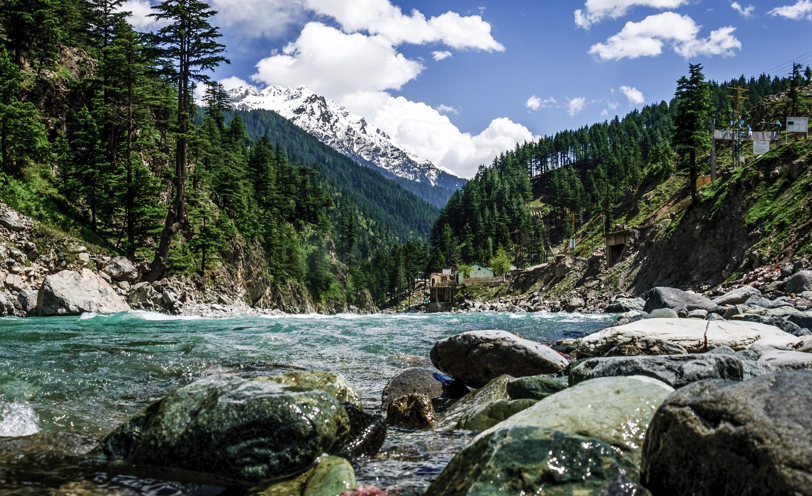
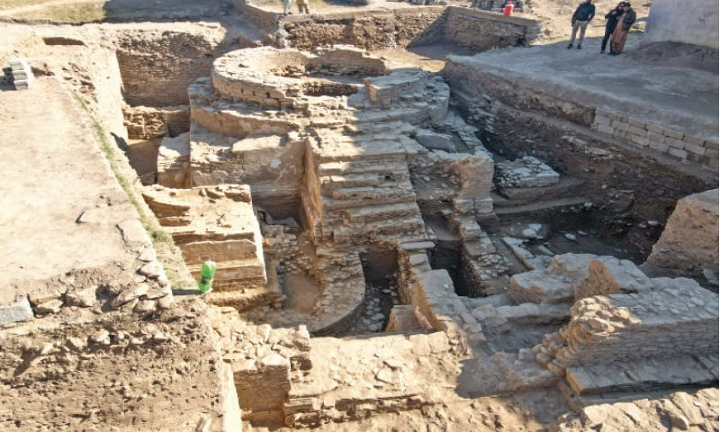
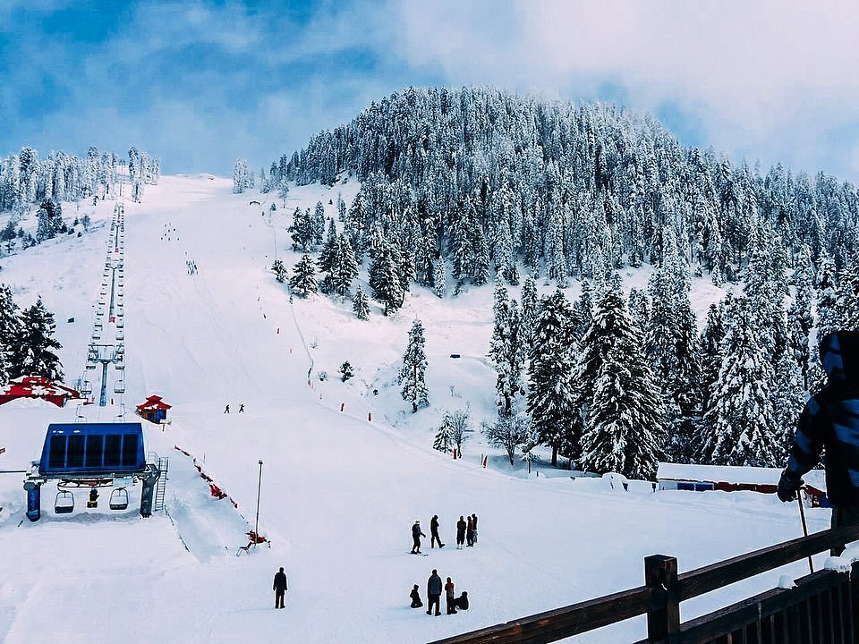
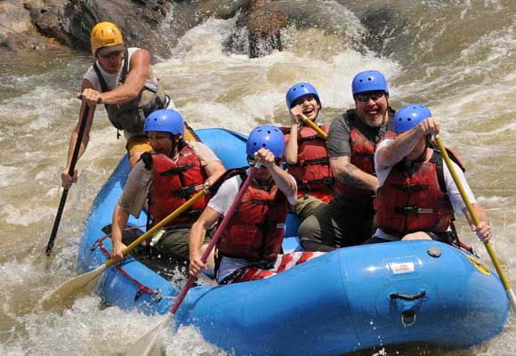

The Switzerland of Pakistan
Swat Valley, located in Khyber Pakhtunkhwa, has earned the nickname "Switzerland of Pakistan" for its dramatic scenery. Forested mountains, turquoise rivers, alpine meadows, and ancient Buddhist heritage make it one of Pakistan's most visited destinations.
The Swat River flows through the valley, flanked by terraced fields, orchards, and traditional Pashtun villages. In winter, Malam Jabba resort offers skiing, making Swat one of the few places in South Asia with a ski facility.

Highlights & Activities

Buddhist Ruins
Swat was the ancient kingdom of Udyana and contains hundreds of Buddhist stupas, monasteries, and sculptures from 1st–7th century CE.

Malam Jabba Skiing
Pakistan's premier ski resort, located at 2,804 m, with slopes for beginners and experienced skiers.

Kalam Valley
A remote upper valley with pristine lakes, dense forests, and trekking routes into the Hindu Raj mountains.

River Activities
The Swat River is ideal for trout fishing, white-water rafting, and riverside camping.